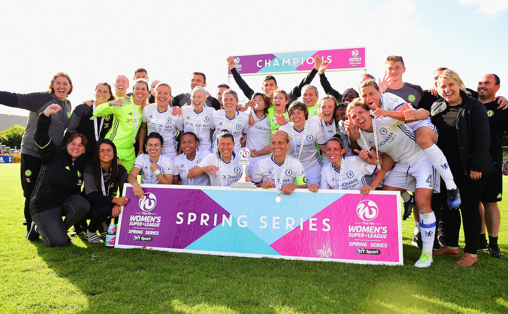

Chelsea Ladies secured the FA Women's Super League Spring Series title with an away victory over Birmingham City in the last game of the season.Chelsea ทีมหญิงคว้า Champion FA Women's Super League Spring Series ด้วยชัยชนะเหนือ Birmingham City ใน Match สุดท้ายของ Season
For the second game running Hayes made five changes to her starting line-up, reverting to the same team which beat Liverpool 7-0 a week earlier. That meant both wing-backs were changed from the midweek win over Bristol City, Gemma Davison and Crystal Dunn replacing Hannah Blundell and Beth England. It was also all change for the front three, with Erin Cuthbert, Drew Spence and Ramona Bachmann making way as Ji So-Yun and Carney lined up behind Kirby. The goalkeeper, defence and centre-midfield all remained unchanged.สำหรับ Match ที่สองที่ Hayes ทำการเปลี่ยนแปลง Player ตัวจริงของเธอ 5 ครั้ง โดยกลับไป Team เดิมที่เอาชนะ Liverpool 7-0 1 สัปดาห์ก่อนหน้านี้ นั่นหมายความว่า Wing-back ทั้งสองคนถูกเปลี่ยนจาก Match กลางสัปดาห์ที่ชนะ Bristol City, Gemma Davison และ Crystal Dunn แทนที่ Hannah Blundell และ Beth England ทั้ง 3 แนวหน้ามีการเปลี่ยนแปลงเช่นกัน โดย Erin Cuthbert, Drew Spence และ Ramona Bachmann เข้ามา ขณะที่ Ji So-Yun และ Carney เรียงแถวอยู่ด้านหลัง Kirby ส่วน Goalkeeper, Defender และ Midfielder ยังคงไม่เปลี่ยนแปลง
The game got under way in bright sunshine at Solihull Moors and both sides won early corners but failed to capitalise, although there were signs that Chelsea's high pressing would cause Birmingham problems.Game ดำเนินไปท่ามกลางแสงแดดอันสดใสที่ Solihull Moors และทั้งสองฝ่ายได้ Corner ในช่วงต้น Game แต่ล้มเหลวในการจบ Score แม้ว่าจะมีสัญญาณว่า High Pressing ของ Chelsea จะทำให้เกิดปัญหากับ Birmingham
Millie Bright did well to intervene when the home side threatened to get in behind the Blues back line with a flicked-on long ball, and Birmingham continued to pursue an early ball over the top for Ellie Brazil in the opening exchanges, compared to Chelsea's more patient play.Millie Bright เข้ามาแทรกแซงได้ดีเมื่อฝั่งเจ้าบ้านขู่ว่าจะเข้าหลังแนวหลังของ Blues ด้วย Long Ball ที่สะบัดเข้าไป และ Birmingham ยังคงไล่ตาม Ball เร็วเหนือหัวให้กับ Ellie Brazil ในการเปิดสนาม เมื่อเทียบกับการ Play ที่อดทนมากกว่าของ Chelsea
After quarter-of-an-hour Chelsea started to enjoy more of the possession, only the linesman's flag denying Dunn the chance to cross from a promising position after latching on to Deanna Cooper's lofted ball down the left channel.หลังจากผ่านไป 15 นาที Chelsea เริ่มสนุกกับการครอง Ball มากขึ้น มีเพียงธงของ Linesman เท่านั้นที่ปฏิเสธไม่ให้ Dunn มี Chance จ่าย Ball จาก Position ที่มีแนวโน้มหลังจากจับ Ball ของ Deanna Cooper ที่ยกไปทางช่องด้านซ้าย
Dunn did get the chance to cross soon afterwards and it provided the game's first sight of goal. Carney did well in midfield to evade the opposition challenges and release Dunn on the left. Her cross was only cleared as far as Ji, but the South Korean couldn't keep her volley down.Dunn ได้รับ Chance จ่าย Ball หลังจากนั้นไม่นาน และถือเป็นโอกาสทำ Goal แรกของ Game โดย Carney ทำได้ดีใน Position Midfield เพื่อหลบหลีกความท้าทายของคู่แข่งและปล่อย Dunn ทางด้านซ้าย Cross ของเธอเคลียร์ได้ไกลถึง Ji เท่านั้น แต่ Player ชาวเกาหลีใต้ก็ไม่สามารถกด Volley ของเธอลงได้
A better chance would follow, though, as the referee award a penalty to Chelsea when Kirby was flattened by Birmingham goalkeeper Ann-Katrin Berger, having knocked the ball past her running towards goal. Berger was shown a yellow card for her robust challenge.อย่างไรก็ตาม Chance ที่ดีกว่าจะตามมา เมื่อ Referee ให้ Penalty แก่ Chelsea เมื่อ Kirby ถูก Ann-Katrin Berger Goalkeeper ของ Birmingham ทำฟาวล์ใส่ โดยทำ Ball ผ่านเธอที่กำลังวิ่งเข้าหา Goal ซึ่ง Berger ได้รับ Yellow Card จากการท้าทายที่แข็งแกร่งของเธอ
Carney stepped up to the spot and made no mistake from 12 yards, calmly slotting the ball down the middle as Berger dived to her right to score what felt like a crucial goal in the title pursuit.Carney ก้าวขึ้นไปที่จุด Penalty Spot และไม่พลาดจากระยะ 12 หลา โดยยิง Ball เข้าตรงกลางอย่างใจเย็นในขณะที่ Berger พุ่งไปทางขวา เพื่อทำ Goal ที่รู้สึกเหมือนเป็น Goal สำคัญในการไล่ล่า Title
Chelsea twice threatened a second soon after, Kirby nearly breaking free in the area with a clever turn and Bright inches from getting her head on a dangerous Carney free-kick.Chelsea ข่มขวัญด้วย Goal ที่สองถึงสองครั้งหลังจากนั้นไม่นาน Kirby เกือบหลุดเข้าไปใน Area ด้วยการ Turn ที่ชาญฉลาด และ Bright ห่างเพียงไม่กี่นิ้วจากการโหม่ง Free-kick อันตรายของ Carney
The high press perhaps should have made it 2-0, as Kirby was alert to intercept the ball and exchange passes with Ji to turn the Birmingham defence, but Davison couldn't put her back-post header on target when picked out by an excellent Dunn cross. That tactic again came close to paying dividends, this time with Maren Mjelde winning the ball high up and trying to catch Berger unprepared with a long-range lob, but the Birmingham keeper recovered just in time.High Press อาจจะทำให้ Score เป็น 2-0 ได้ เนื่องจาก Kirby ตื่นตัวที่จะ Intercept Ball และแลกเปลี่ยน Pass กับ Ji เพื่อพลิก Defender ของ Birmingham แต่ Davison ไม่สามารถโหม่งทำ Goal ที่เสาสอง (Back-post) ให้เข้า Target ได้เมื่อได้รับการ Cross ที่ยอดเยี่ยมจาก Dunn แทคติก (Tactic) นั้นเกือบจะส่งผลตอบแทนอีกครั้ง คราวนี้ Maren Mjelde แย่ง Ball ได้ในแดนบน และพยายามจับ Berger ที่ไม่ทันตั้งตัวด้วย Lob ระยะไกล แต่ Goalkeeper ของ Birmingham กลับมาได้ทันเวลา
As the half wore on Chelsea started to exert increasing dominance, with the combination of Carney and Dunn on the left continuing to look like our most likely route to goal and Ji's roaming presence also starting to ask questions of the Birmingham defence.เมื่อผ่าน Half แรกไป Chelsea เริ่มแสดงความโดดเด่นมากขึ้น ด้วยการประสานงานของ Carney และ Dunn ทางฝั่งซ้ายที่ยังคงดูเหมือนจะเป็นเส้นทางสู่ Goal ที่เป็นไปได้มากที่สุดของเรา และการเคลื่อนที่อย่างอิสระของ Ji ก็เริ่มสร้างปัญหาให้กับ Defender ของ Birmingham
The closest we came to adding a second before the break came right on the brink of half-time, Ji laying off a ball in the box for Kirby on the penalty spot, but the goalkeeper got just enough on her finish to deny a goal and scramble to gather the loose ball.โอกาสใกล้เคียงที่สุดที่เราจะเพิ่ม Goal ที่สองก่อนพักครึ่งเกิดขึ้นในช่วงท้ายของ Half-time โดย Ji จ่าย Ball เข้าไปใน Box ให้ Kirby ที่จุด Penalty แต่ Goalkeeper เซฟลูกยิงของเธอไว้ได้เพียงพอที่จะป้องกัน Goal และตะเกียกตะกายไปเก็บ Loose Ball
Chelsea maintained our dominance into the second half, Mjelde going close early on as her header from a Carney corner was deflected wide.Chelsea ยังคงรักษาความเหนือกว่าเข้าสู่ช่วง Second Half โดย Mjelde เกือบทำ Goal ได้ตั้งแต่ต้นเกมเมื่อลูกโหม่งของเธอจาก Corner ของ Carney ถูกแฉลบออกหลังไป
It didn't take long for the increasing Blues pressure to extend our lead, though. A patient build up on the edge of the box after 13 minutes after the restart saw Davison find space on the right and when Berger failed to deal with her driven low cross, seeing the ball spin off the far post, Kirby reacted quickest to mop up the loose ball, readjust her feet smartly and finish into the open net. Chelsea had one hand on the trophy.ใช้เวลาไม่นานที่ Pressure ของ Blues จะขยายการขึ้นนำของเรา การต่อ Ball อย่างใจเย็นที่ขอบ Box หลังจากเริ่มเกมใหม่ 13 นาที ทำให้ Davison หา Space ทางฝั่งขวาได้ และเมื่อ Berger ไม่สามารถจัดการกับ Low Cross ของเธอได้ ทำให้ Ball หมุนกระดอนออกจากเสาไกล (Far Post) Kirby ตอบสนองเร็วที่สุดในการตามเก็บ Loose Ball ปรับเท้าของเธออย่างชาญฉลาด และจบ Score เข้าสู่ Open Net ทำให้ Chelsea มีมือข้างหนึ่งจับ Trophy ไว้แล้ว
Birmingham responded by bringing on a second striker with the game's first substitution and Hayes followed suit with Chelsea's first change immediately, Carney switching to the right side as Davison made way for Bachmann, who slotted in alongside Ji behind Kirby.Birmingham ตอบโต้ด้วยการส่ง Striker คนที่สองลงมาด้วย Substitution คนแรกของ Game และ Hayes ก็ตามมาด้วย Change แรกของ Chelsea ในทันที โดย Carney เปลี่ยนไปฝั่งขวา ขณะที่ Davison หลีกทางให้ Bachmann ซึ่งลงไปประจำการเคียงข้าง Ji ด้านหลัง Kirby
Mjelde came close again following the best move of the game. Clever work in the box from Gilly Flaherty and Kirby ended with Ji rolling the ball backwards into Mjelde's path, but our No18 fired her effort narrowly over.Mjelde เกือบทำ Goal ได้อีกครั้งตามมาด้วย Move ที่ดีที่สุดของ Game การเล่นที่ชาญฉลาดใน Box จาก Gilly Flaherty และ Kirby จบลงที่ Ji กลิ้ง Ball กลับหลังไปในเส้นทางของ Mjelde แต่ Player No.18 ของเรายิงข้ามคานออกไปนิดเดียว
There was a wide round of applause around the stadium as the excellent Kirby exited the pitch with six minutes remaining, replaced by Spence.มีเสียงปรบมือดังไปทั่ว Stadium เมื่อ Kirby ที่โชว์ Form ยอดเยี่ยมเดินออกจาก Pitch โดยเหลือเวลาอีก 6 นาที และถูกแทนที่โดย Spence
Substitute Bachmann nearly provided the icing on the cake in injury time, weaving her way through the Birmingham defence and into the penalty area with a fine run, but Berger rushed out to smother the ball at the last moment.Substitute อย่าง Bachmann เกือบจะทำ Goal ปิดท้าย (Icing on the cake) ในช่วง Injury Time โดยเลี้ยงฝ่า Defender ของ Birmingham เข้าไปใน Penalty Area ด้วยการ Run ที่ยอดเยี่ยม แต่ Berger พุ่งออกมาตะครุบ Ball ไว้ได้ในวินาทีสุดท้าย
Birmingham pressed on for a goal in the closing stages, but Chelsea held firm and rarely looked troubled as they saw out the game to final whistle, which sparked the celebrations for the travelling Blues, now officially champions of England.Birmingham กดดันเพื่อหา Goal ในช่วงท้ายเกม แต่ Chelsea ยืนหยัดอย่างมั่นคงและแทบไม่ดูมีปัญหาขณะที่พวกเขาประคอง Game จนถึง Final Whistle ซึ่งจุดประกายการ Celebrate สำหรับ Blues ที่เดินทางมาเยือน ซึ่งตอนนี้เป็น Champion ของ England อย่างเป็นทางการ